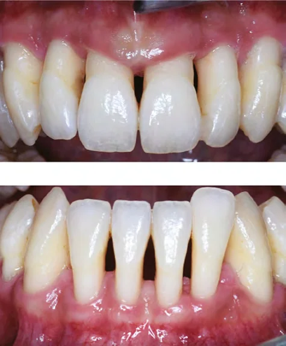
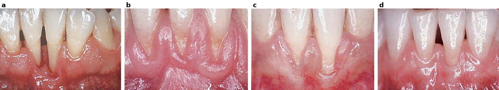

نسخه استخراجشده؛ ترجمه یا تأیید علمی انجام نشده است. وضعیت: captured
جابهجایی مارجین لثه به سمت آپیکال، فراتر از CEJ، که به برهنه شدن سطح ریشه میانجامد.

بیوتایپ نازک لثه (در طبقهبندی ۲۰۱۷ «فنوتیپ لثهای نازک») — مهمترین عامل زمینهای.
دهیسانس و فنستراسیون استخوانی — نبود استخوان زیر لثه.
موقعیت نادرست دندان در قوس، بهویژه دندانهای خارج از قوس.
اتصال بالای فرنوم که مارجین را میکشد.
کمبود لثه کراتینیزه.
مسواک زدن تروماتیک — فشار زیاد، برس سخت، تکنیک افقی.
التهاب ناشی از بیوفیلم.
حرکات ارتودنسی به خارج از پوشش استخوانی.
ترمیمهای زیرلثهای که به اتصال فوقکرستال تجاوز میکنند.
پیرسینگ لب و زبان.
🔑 هیچکدام بهتنهایی کافی نیستند. تحلیل زمانی رخ میدهد که عاملی آغازگر بر بستری مستعد وارد شود — و همین توضیح میدهد چرا دو نفر با تکنیک مسواک یکسان، سرنوشت متفاوتی دارند.
| کلاس | تعریف | پوشش ریشه قابل انتظار |
|---|---|---|
| I | تحلیل به MGJ نرسیده؛ بدون از دست رفتن بافت بیندندانی | 🟢 ۱۰۰ درصد |
| II | تحلیل به MGJ رسیده یا از آن گذشته؛ بدون از دست رفتن بافت بیندندانی | 🟢 ۱۰۰ درصد |
| III | از دست رفتن بافت نرم یا استخوان بیندندانی، یا موقعیت نادرست دندان | 🟡 پوشش نسبی |
| IV | از دست رفتن شدید بافت بیندندانی یا موقعیت بسیار نامناسب دندان | 🔴 پوشش قابل انتظار نیست |
🔑 مهمترین درس این جدول: کلاس I و II هر دو پوشش کامل میگیرند. تفاوت آنها فقط رسیدن یا نرسیدن به MGJ است و بر پیشآگهی پوشش اثری ندارد. آنچه پیشآگهی را تعیین میکند، وضعیت بافت بیندندانی است.

⚠️ چرا بافت بیندندانی اینقدر مهم است؟ چون پاپیلای مجاور، منبع خونرسانی به بافت پیوندی و حد نهایی ارتفاعی است که پوشش میتواند به آن برسد.
طبقهبندی ۲۰۱۷ این نظام را ترجیح میدهد، چون بر سنجهای عینی و تکرارپذیر استوار است نه بر تشخیص چشمی MGJ.
| نوع | معیار | پوشش قابل انتظار |
|---|---|---|
| RT1 | بدون از دست رفتن CAL بیندندانی | 🟢 پوشش کامل |
| RT2 | CAL بیندندانی کمتر یا مساوی CAL باکالی | 🟡 پوشش نسبی تا کامل |
| RT3 | CAL بیندندانی بیشتر از CAL باکالی | 🔴 پوشش کامل قابل انتظار نیست |
🔑 برتری این نظام: MGJ گاهی بهسختی دیده میشود و قضاوت درباره آن ذهنی است؛ اما CAL را میتوان اندازه گرفت و بین معاینهگران تکرار کرد.
❌ خیر. بسیاری از موارد تحلیل، پایدارند و فقط به پایش نیاز دارند.
حساسیت مقاوم به درمانهای غیرجراحی.
نگرانی زیبایی بیمار.
پیشرفت مستند تحلیل در پایشهای متوالی.
دشواری کنترل پلاک در ناحیه.
پوسیدگی یا ابریژن ریشه پیشرونده.
اصلاح تکنیک مسواک زدن — بدون آن، تحلیل پس از جراحی برمیگردد.
کنترل التهاب.
ترک سیگار — سیگار نتیجه جراحی موکوژنژیوال را بهطور معناداری بدتر میکند.
⚠️ اشتباه رایج ۱: کلاس I و II میلر هر دو پوشش کامل میگیرند.
⚠️ اشتباه رایج ۲:بافت بیندندانی تعیینکننده پیشآگهی است، نه MGJ.
⚠️ اشتباه رایج ۳: هر تحلیلی نیازمند جراحی نیست.
نوع سؤال: ساخت کلمه · 5 خانه
حروف منبع: و · ک · س · م · ا